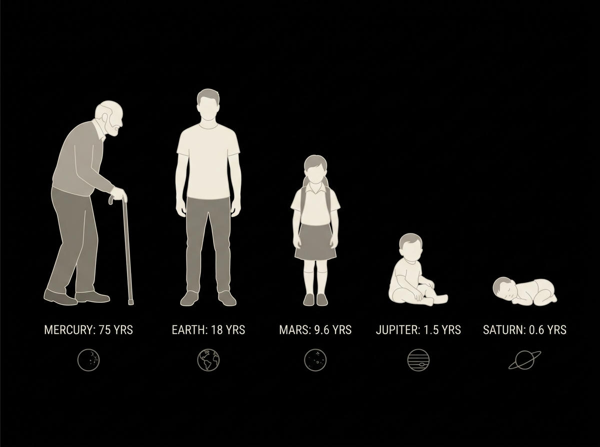
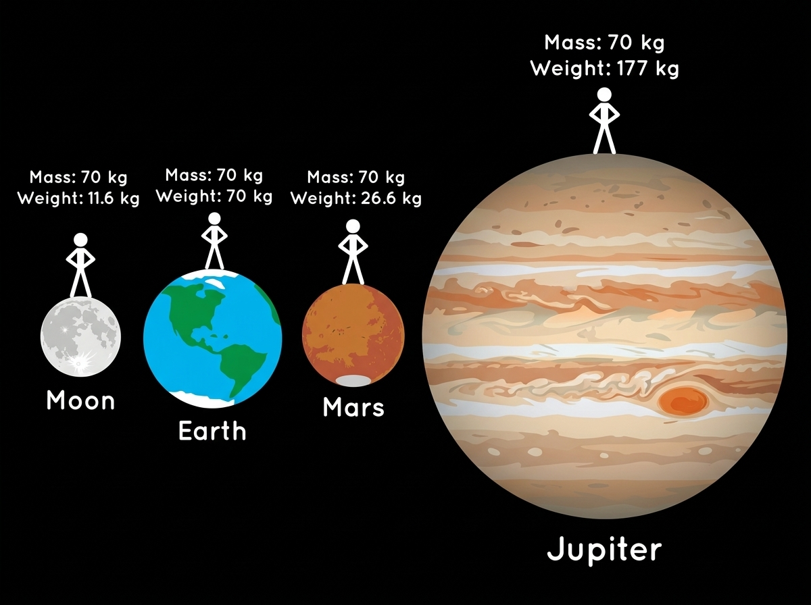
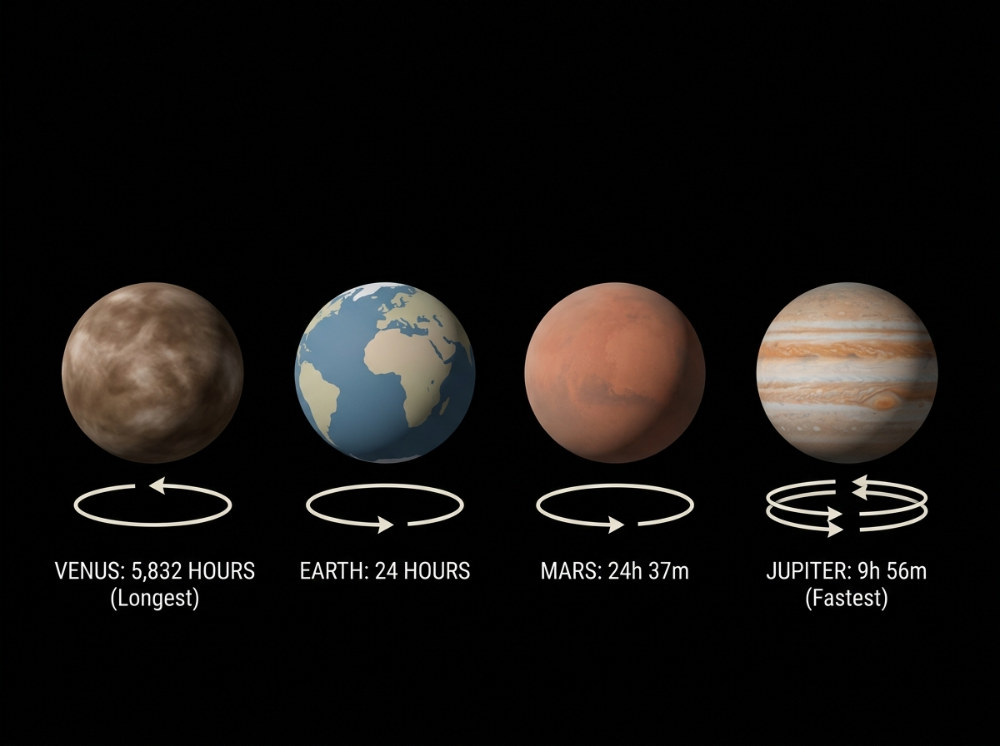
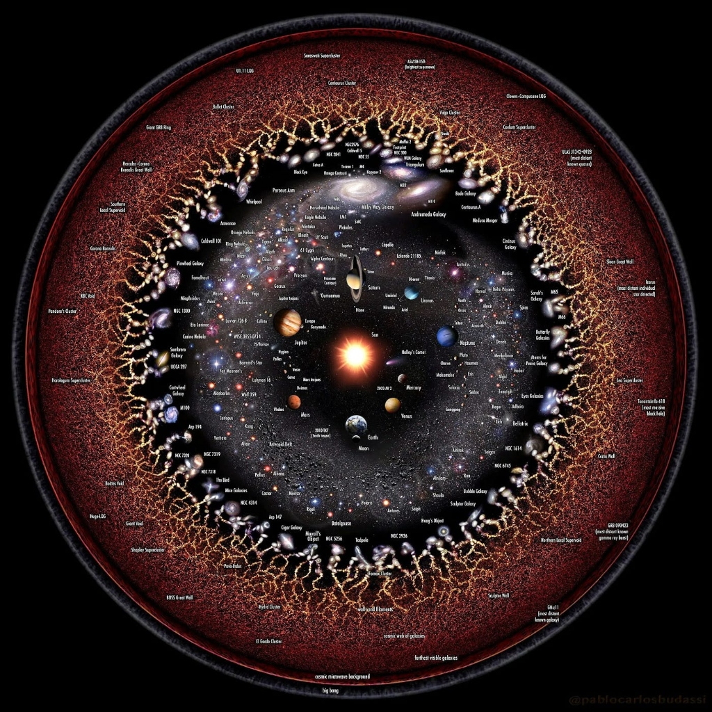
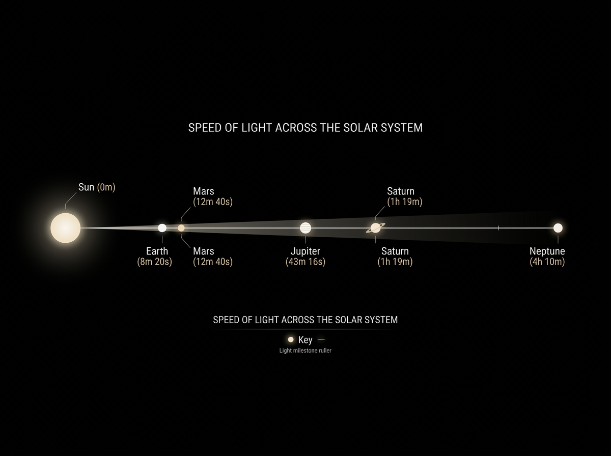

HOW OLD ARE YOU?
A year is one orbit around the Sun. Every planet takes a different time, so your age changes depending on where you stand. Here's what 18 Earth years becomes:

YOUR WEIGHT
Weight is just mass × gravity. Different worlds pull you with different force. Standing on Jupiter, you'd feel crushed. On the Moon, you'd float with every step. Your 70 kg on Earth becomes:

YOUR DAY
Planets spin at wildly different speeds. Jupiter completes a rotation before your lunch break. Venus takes longer to spin once than to orbit the Sun — and it rotates backwards.

WORLD SIZES
Numbers alone can't convey the scale. Earth could fit inside Jupiter over 1,300 times. And the Sun dwarfs everything — you could fit 1.3 million Earths inside it.
12,742 km
6,779 km
12,742 km
139,820 km
12,742 km
1,391,000 km

LIGHT TRAVEL
Light is the fastest thing in the universe at 299,792 km/s. Yet crossing even our Solar System takes measurable time. Reaching other stars? That takes years.